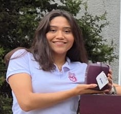

Prefacio
El Libro Digital Interactivo de Sistemas Operativos
ha sido diseñado como una herramienta educativa dinámica e innovadora, orientada al aprendizaje activo de las y los estudiantes. Su objetivo es fortalecer, de manera progresiva y aplicada, los fundamentos que explican cómo y por qué los sistemas operativos constituyen
el eje que organiza y controla todo lo que ocurre en una computadora, asegurando el uso eficiente, seguro y coordinado de los recursos para brindar una mejor experiencia al usuario.
A diferencia de un texto tradicional, este libro digital aprovecha las posibilidades de la interactividad a través de diagramas dinámicos, simulaciones, autoevaluaciones, actividades guiadas y recursos multimedia,
se busca que el estudiante explore los conceptos clave de forma práctica, autónoma y significativa. La estructura modular permite avanzar gradualmente desde los principios básicos del sistema operativo hasta los
temas de mayor complejidad, integrando ejemplos reales y entornos de experimentación digital.
Cada sección ha sido desarrollada con un enfoque pedagógico centrado en la comprensión, la aplicación y la reflexión. La interactividad no solo complementa el contenido teórico, sino que invita al lector a experimentar,
analizar y construir su propio conocimiento, fortaleciendo sus competencias técnicas y su pensamiento crítico.
Este recurso representa una innovación educativa que refleja la convicción de que el aprendizaje debe ser una experiencia participativa, incluyente y significativa, en la que el estudiante sea protagonista de su propio
desarrollo académico.
El Libro Digital Interactivo de Sistemas Operativos es más que un material de apoyo: es una invitación a explorar, descubrir y aprender con creatividad, rigor y pasión por la tecnología.
Introducción
La estructura de este recurso busca que el aprendizaje sea progresivo y accesible, facilitando la comprensión de conceptos complejos mediante explicaciones claras y ejemplos aplicables.
Más allá de responder a cómo funcionan los sistemas operativos, este texto invita a cuestionar por qué se diseñan de esa manera y qué impacto tienen esas decisiones en el rendimiento, la seguridad y la experiencia del usuario. Así, se busca fomentar una formación crítica y reflexiva que permita al lector comprender, analizar e innovar en un campo esencial de la tecnología moderna.
Programa de la Unidad de Aprendizaje
IPN
Instituto Politécnico Nacional
Secretaría Académica
Dirección de Educación Superior
PROGRAMA SINTÉTICO
Unidad Académica: Escuela Superior de Cómputo
Programa Académico: Ingeniería en Sistemas Computacionales
Unidad de Aprendizaje: Sistemas Operativos
Semestre: IV
Modalidad: Escolarizada
Tipo: Teórica-Práctica / Obligatoria
Vigencia: Agosto 2021
Créditos SATCA: 6.3
Propósito de la Unidad de Aprendizaje
El propósito de la Unidad de Aprendizaje (UA) Sistemas Operativos es:
Propone soluciones a las necesidades de sistemas computacionales actuales a partir del funcionamiento del sistema operativo.
Orientación Didáctica
Con el fin de obtener mejores resultados en cuanto a tu autoaprendizaje, te
recomendamos estudiar cada una de las unidades temáticas en la secuencia en
que aparecen en este Recurso didáctico digital.
Ver programa completo en el documento oficial
Encuadre
El propósito de la Unidad de Aprendizaje (UA) Sistemas Operativos es proponer soluciones a las necesidades de sistemas computacionales actuales a partir del funcionamiento del sistema operativo. A lo largo de este recurso, se explorarán los componentes fundamentales que permiten esta gestión.
Autores del Recurso Didáctico
Israel Salas Ramírez
isalasr@ipn.mx
Semblanza: Docente en la Escuela Superior de Cómputo del Instituto Politécnico Nacional, es doctor y maestro en ciencias de la educación, ingeniero en comunicaciones y electrónica de la ESIME Zacatenco, ha trabajado como responsable de unidades de Informática y generación de proyectos de Inversión Tecnológica.
Áreas de interés: Sistemas Operativos, Administración de Redes, Neurociencia en la Educación, Redes Neuronales, Generación de Simuladores Médicos y Plataformas Virtuales Aplicados a la Educación.
Hermelinda Patricia Leyva López
hleyval@ipn.mx
Semblanza: Docente de la unidad de aprendizaje TIC aplicadas para el Turismo en la Escuela Superior de Turismo del Instituto Politécnico Nacional, Doctor en Educación, Maestría en Administración de Tecnologías de la Información, Maestría en Docencia y Desarrollo de Competencias, Maestría en Educación, Contador Público egresada de ESCA-IPN.
Áreas de interés: Neurociencia de la Educación y Redes Neuronales, Metodología de la Investigación, Educación en línea con plataformas virtuales.
Benjamín Cruz Torres
bcruzt@ipn.mx
Semblanza: Benjamín Cruz Torres (El profe Benji). Actualmente funge como presidente de la academia de sistemas distribuidos y docente en la Escuela Superior de Cómputo del Instituto Politécnico Nacional. Es Doctor en Ciencias de la Computación y Maestro en Ciencias de la Computación por parte del Centro de Investigación en Computación del Instituto Politécnico Nacional.
Áreas de interés: los sistemas distribuidos, el cómputo en la nube, la inteligencia artificial, la administración de redes y las tecnologías web.
Equipo de Desarrollo
Estudiantes que contribuyeron a la creación de este recurso digital.

CASIMIRO HERNÁNDEZ GAEL NOEL
gcasimiroh2100@alumno.ipn.mx

CONDE GALVÁN LESLIE MONSERRAT
lcondeg1500@alumno.ipn.mx

MÁRQUEZ HERNÁNDEZ SARAH MICHELLE
smarquezh1900@alumno.ipn.mx
MARTÍNEZ LEÓN JOSUÉ DAVID
jmartinezl2103@alumno.ipn.mx
Metodología
Para lograr el propósito planteado, la presente UA se abordará a partir de la estrategia de aprendizaje orientada a proyectos así como del método heurístico.
Unidades Temáticas
- I. Estructura de un Sistema Operativo
- II. Administración de procesos
- III. Administración de memoria
- IV. Sistema de archivos
- V. Dispositivos de entrada y salida
- VI. Seguridad y Virtualización